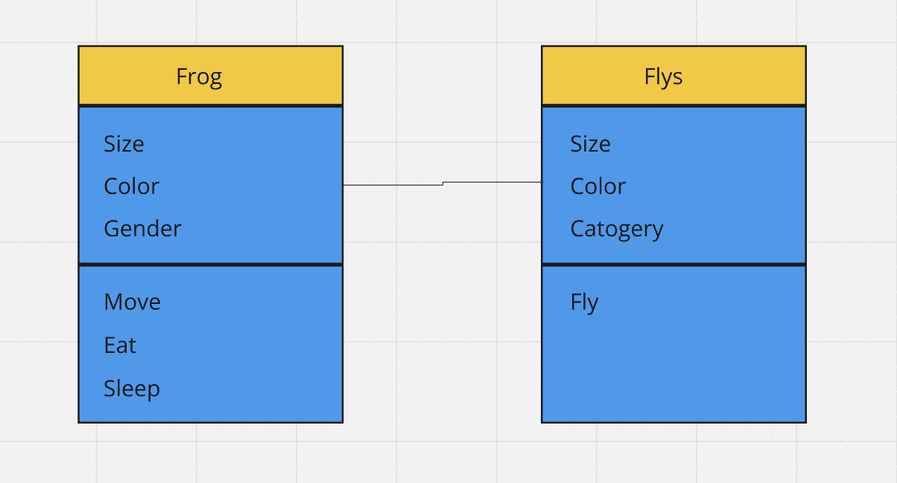
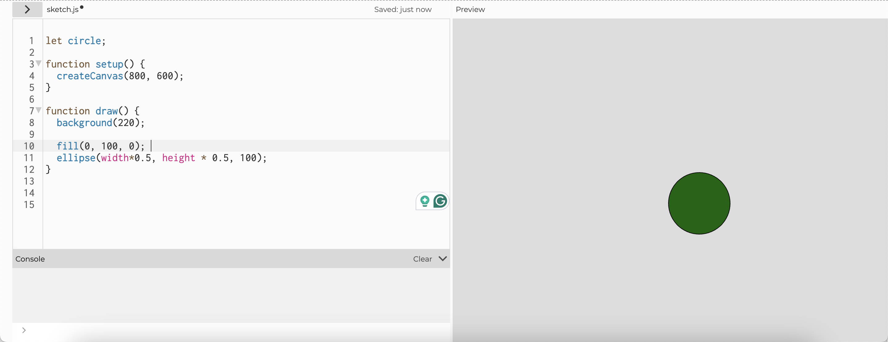
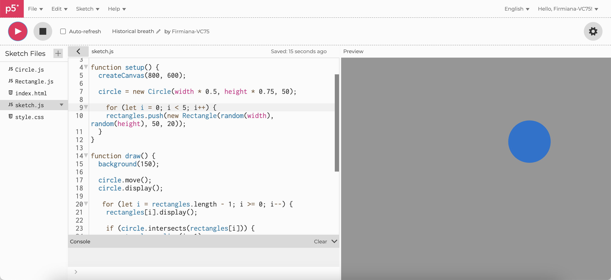
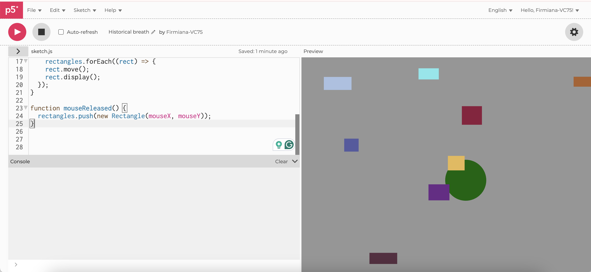
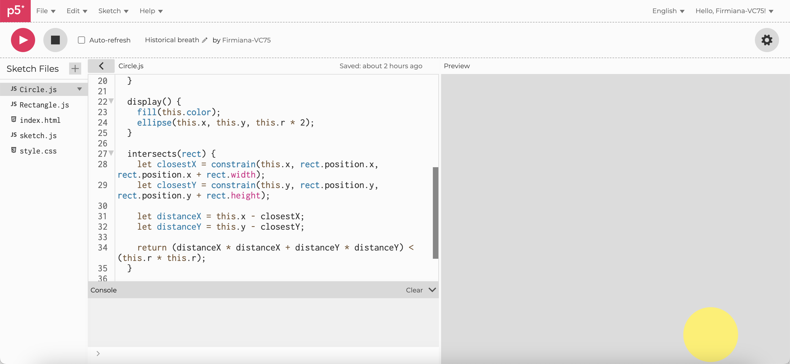
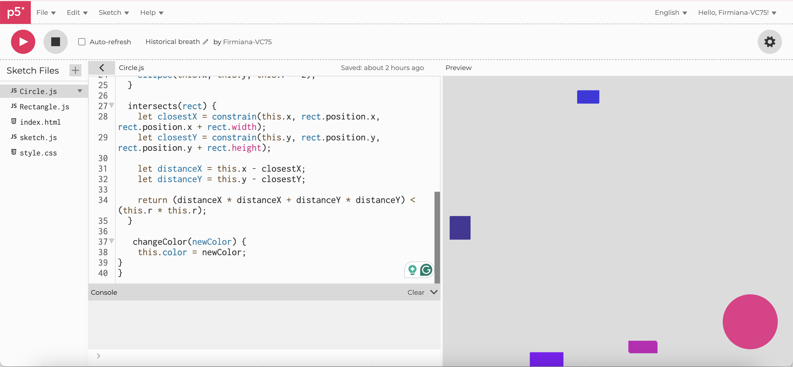

Accoring to the example in class, I decided to make a code about frog eating flys. I want to make the frog jump to catch the flys.
Firstly, I draw a circle in the canvas.
Make 5 rectangles at once. Also, don't forget to make the shapes moving.
I want to make the shapes keep appearing. So I added a mouseclick function.
Make the rectangle disappear after colliding with the circle by calculating the position.
Make it different! Change color after eating a fly!
